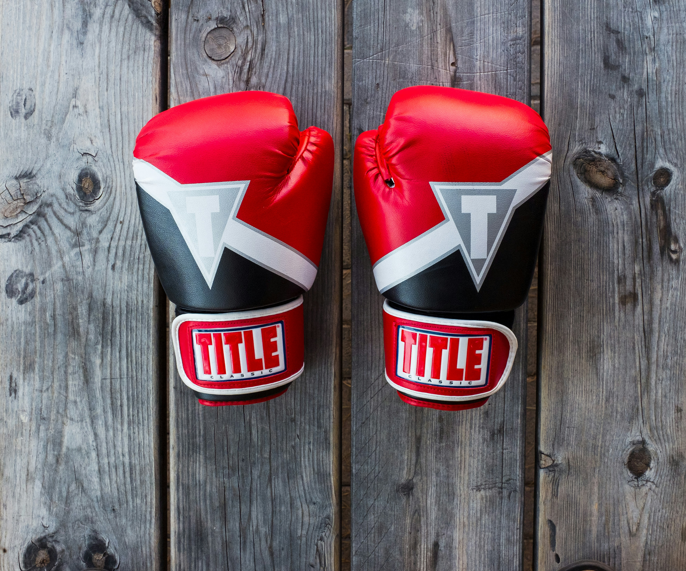
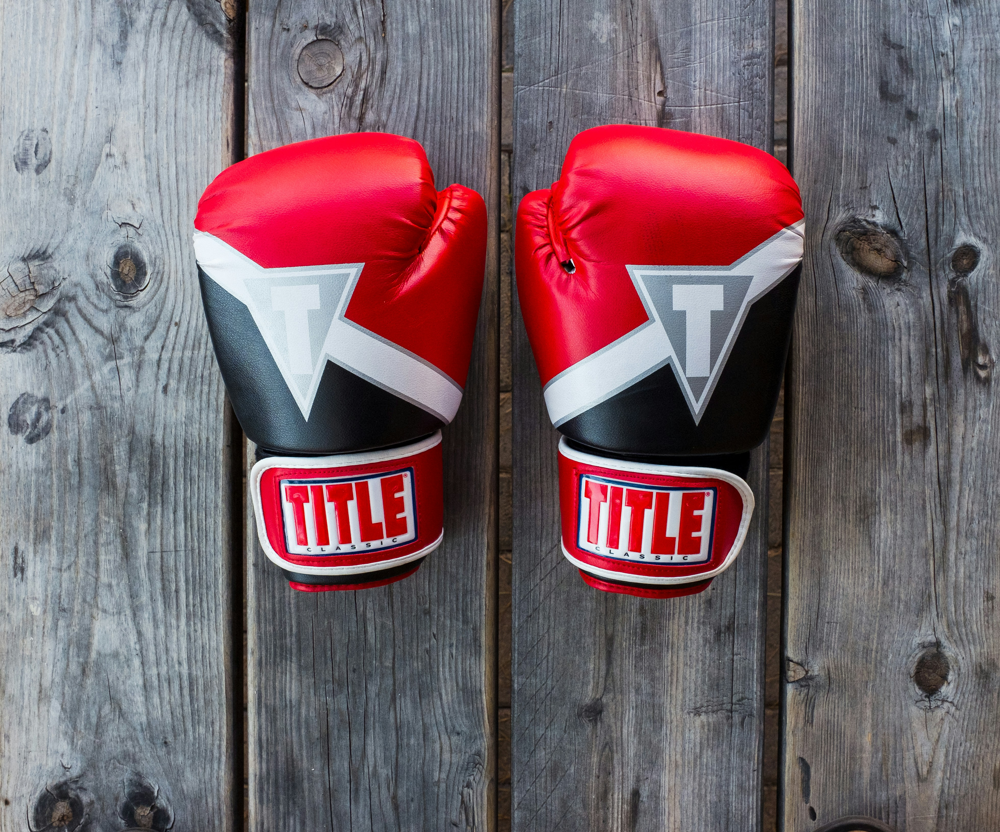

Peakaboo
Estilo usado por Mike Tyson, uma guarda alta e defensiva, ágil e com um contra-ataque mortal
 

- Jab
- Direto
- Cruzado
Hitman
É idêntico ao estilo de Detroit, extremamente ofensivo e violento
| Thomas | Hearns |
|---|---|
| Marvin | Hagler |
| Mike | Tyson |